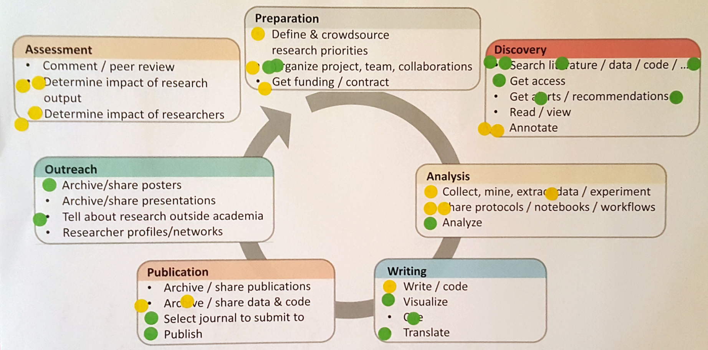
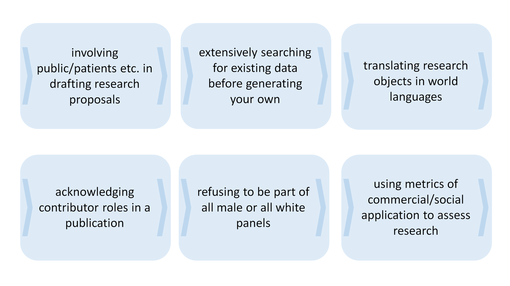
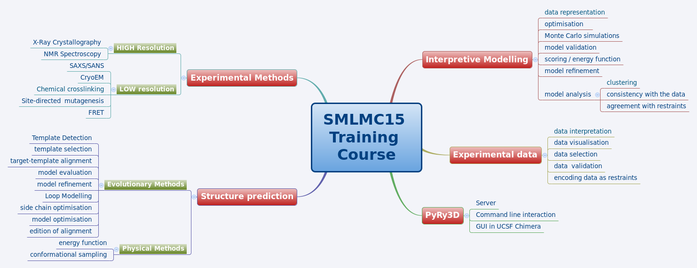

Ejemplos y guías prácticas: adoptar, adaptar, desarrollar
En este capítulo encontrarás diversos materiales que te ayudarán a involucrar activamente a los asistentes al curso de formación, en el análisis crítico de los problemas relacionados con la Ciencia Abierta.
Sugerimos considerar estos materiales teniendo en mente el lema “Adoptar, adaptar, desarrollar", siempre considerando que es mejor reutilizar –hasta donde sea posible– lo que ya existe. Por tanto, antes de que empieces a desarrollar materiales de capacitación desde cero, debes averiguar si ya existen recursos que puedas utilizar. Aquí te proporcionamos algunos recursos como ejemplo, con consejos acerca de cómo adaptarlos a tus objetivos. De igual forma, te ofrecemos enlaces y estrategias para localizar material adicional. Algunos recursos pueden usarse tal y como están, en cuyo caso sólo tienes que adoptarlos; por ejemplo, puedes recomendar a tu audiencia un video tutorial disponible en abierto. En otros casos será preciso adaptar recursos ya existentes con el fin de ajustarlos a tus propósitos; por ejemplo, agregar o reemplazar las referencias de alguna institución o país, por una visión más general sobre requisitos de Acceso Abierto emitidos por quienes financian investigación. Solo como último recurso te recomendamos desarrollar tus propios materiales de capacitación desde cero, en cuyo caso es preciso que te asegures de desarrollarlos como Recursos Educativos Abiertos, para que otros capacitadores puedan reusarlos y adaptarlos.
Ejemplos de formatos de capacitación
Encuentros Göttingen de Ciencia Abierta, Biblioteca de la Universidad de Göttingen (3 horas)
La Red de Ciencia Abierta de Göttingen (Open Science Network Göttingen) agrupa a investigadores y bibliotecarios que apoyan prácticas e intercambios de conocimientos sobre Ciencia Abierta. Dicha red organiza regularmente estos encuentros donde discuten y analizan cuestiones relacionadas con Ciencia Abierta. La red agrupa a personas interesadas en estos temas del campus Göttingen, pero también está abierta a quien quiera participar. Han ganado popularidad dado que atraen académicos de diferentes disciplinas que desean compartir sus experiencias sobre Educación Abierta, así como aprender sobre nuevos métodos, herramientas y prácticas. Generalmente los conferenciantes invitados presentan los temas y, posteriormente, se organizan debates grupales para ofrecer una visión más detallada sobre cada aspecto abordado.
Más información: https://www.sub.uni-goettingen.de/en/electronic-publishing/open-science/
Grupos de estudio Mozilla (serie de reuniones de 2 a 3 horas)
Los grupos de estudio son comunidades de pares (por ejemplo, de la misma institución) comprometidos con aprender y enseñar entre sí. Son reuniones divertidas e informales que permiten a los participantes compartir habilidades, experiencias e ideas sobre Ciencia Abierta, Código Abierto, Programación y Comunidades de Investigación. El objetivo del Mozilla Study Group Project es apoyar este tipo de estudio entre pares, propocionando un conjunto sencillo de herramientas, modelos de planes de estudio y acceso a una comunidad internacional de investigadores con ideas afines y entusiastas estudiantes de programación (texto adaptado de https://science.mozilla.org/programs/studygroups).
Análisis sobre reproducibilidad y transparencia en la investigación (taller de un día completo)
Transparencia, Compartir en Abierto y Reproducibilidad son valores fundamentales de la ciencia, pero no siempre son parte de una práctica cotidiana. Una primera versión de este taller tuvo lugar en el contexto de la Open Science Tools, Data & Technologies for Efficient Ecological & Evolutionary Research, encuentro organizado por NIOO-KNAW y DANS-KNAW. El taller ofrece una visión del estado actual de los análisis sobre reproducibilidad de la ciencia, en la búsqueda de otorgar mayor transparencia a la investigación; aborda desde temas metodológicos (tales como el uso del "Open Science Framework" y sus directrices), así como herramientas de software (como Git, Docker, RMarkdown / knitr y Jupyter). Más allá de meras presentaciones, la segunda parte del taller se enfoca en el desarrollo de habilidades prácticas, con ejercicios y tutoriales que cubren la mayoría de los aspectos relacionados con software. El material y el contenido están disponibles en este enlace: http://reproducible-analysis-workshop.readthedocs.io
Ciencia Abierta: ¿en qué me beneficia? (1 a 2 días)
El objetivo de este taller es ofrecer a investigadores y administradores ejemplos prácticos de herramientas de Ciencia Abierta; así como también flujos de trabajo en diversas disciplinas, para empezar a aplicarlos y discutirlos. Para ello, se presenta una descripción general de las prácticas y herramientas de Ciencia Abierta que se utilizan a lo largo del flujo del trabajo científico, con ejemplos prácticos, encuestas y debates interactivos. El segundo día del taller está orientado a aplicar y compartir. En varias rondas los participantes exploran y, cuando es posible, prueban o aplican herramientas y prácticas. Todo ello lo hacen tanto en grupos pequeños como de forma individual y también en un foro interactivo. En la sesión final se lleva a cabo un debate sobre los obstáculos e incentivos para transformar su propia investigación en Ciencia Abierta.
Open Science - what’s in it for me (Viena, 2017, informe del taller)
Open Science - what’s in it for me (Turín, 2018, programa del taller)
Talleres Carpentry (2 días)
Los talleres Carpentry son encuentros prácticos de dos días, durante los cuales se comparten habilidades básicas necesarias para ser productivo en pequeños equipos de investigación. Se alternan tutoriales cortos con ejercicios prácticos, y toda la capacitación se realiza mediante programación en vivo. Software Carpentry fue fundado en 1998 y Data Carpentry en 2013; ambas soluciones se enfocan en compartir habilidades computacionales, se imparten en talleres de dos días con instructores voluntarios y tienen el objetivo de llenar el vacío que actualmente existe en la capacitación para investigadores; sin embargo, difieren en cuanto a su contenido y público objetivo. Los talleres Data Carpentry se orientan a las mejores prácticas relacionadas con datos, sus participantes no son aquellos interesados en aprender a programar, sino quienes tienen muchos datos y no saben qué hacer con ellos; es decir, están dirigidos a principiantes, son de un ámbito específico y presentan un programa de estudios completo centrado en un solo conjunto de datos. Los talleres Software Carpentry, por su parte, están destinados a personas que necesitan programar de manera más efectiva para resolver sus retos computacionales; y si bien son modulares, no son de asignaturas específicas —cada lección de Software Carpentry es independiente.
Software Carpentry: https://software-carpentry.org
Data Carpentry: http://www.datacarpentry.org/
Programa de capacitación de instructores EIFL (4 días)
EIFL organizó un programa de capacitación a instructores para cinco universidades en países miembros de EIFL (Etiopía, Ghana, Zimbabwe, Tanzania y Nepal), los cuales se han comprometido a integrar temas de Acceso Abierto, Ciencia Abierta e Investigación Abierta en cursos de doctorado. El primer día se abordaron temas vinculados con Acceso Abierto y Datos Abiertos. El segundo y tercer día estuvieron dedicados a cuestiones de Ciencia Abierta en el flujo del trabajo de investigación –incluyendo casos prácticos en curso, de las universidades participantes. El último día los participantes diseñaron y prepararon su propio programa de capacitación.
EIFL Train-the-trainer programme (Addis Abeba, 2017, programa y materiales)
Cursos de Verano de Ciencia Abierta (5 días)
Varias universidades de Europa organizan escuelas de verano de una semana sobre Ciencia Abierta, dirigidas principalmente a investigadores que inician su carrera. Estos encuentros cubren una variedad de temas en cinco días, generalmente con muchas actividades prácticas para aplicar la Ciencia Abierta en la práctica diaria.
EPFL Summer school Open Science in Practice (2017, programa general)
Utrecht University Summer school Open Science and Scholarship (2017, programa y materiales)
Essex Summer school in Social Science and Data Analysis - Introduction in Open Science (2017, programa general)
LERU Doctoral Summer school on Data Stewardship (2016, descripción, objetivos de aprendizaje)

Programa del curso Summer School Open Science and Scholarship, Utrecht University 2017
Ejercicios de ejemplo
Plantilla Maestra
Formato, tiempo necesario
Tema (ver Open Science Basics)
Objetivos de aprendizaje
Descripción del ejercicio
Materiales y herramientas
Conocimientos previos
Elementos para tener en cuenta
Cómo adaptarlo a otros objetivos
¡Utiliza este formulario de Google para sugerir ejercicios adicionales!
Tipos de ejercicios
* Ejercicios rápidos de calentamiento / breves ejercicios de descanso
* Ejercicios en grupos pequeños
* Juego de rol
* Debate temas OS/comentarios
* Comunidad o foro: intercambio de experiencias/conocimiento
* Reuniones con investigadores/responsables de elaboración de políticas
* ...
* Ejercicios plenarios
* Mapeo colaborativo
* Juego de simulación
* Inventario
* Juego de cartas
* Presentaciones
* Juego de rol
* Presentación de casos reales/ejemplos (por parte de participantes)
* Presentaciones de un minuto acerca de algún concepto (por parte de participantes)
* Oradores invitados
* ...
* Ejercicios práctivos (individual o en parejas)
* Visualización
* Exploración/experimentación con herramientas y plataformas
* Implementación de una práctica de Ciencia Abierta en su propia investigación
* Verificar la reproducibilidad de un trabajo de investigación
* …
Ejercicios de ejemplo (incluye materiales)
| Título | Tema | Tipo | Duración | |
| 1 | ¡Alinéandose! | General | Grupo completo | 5-10 minutos |
| 2 | Priorización de las necesidades de capacitación | Conceptos y principios de lo Abierto | Grupo completo | 10 minutos |
| 3 | Selección de prácticas de Ciencia Abierta | Conceptos y principios de lo Abierto | Grupo completo | 1-1.5 hora |
| 4 | Temas de discusión sobre Ciencia Abierta | Conceptos y principios de lo Abierto | Grupos pequeños | 20-30 minutos |
| 5 | Café LIBER de Ciencia Abierta | Conceptos y principios de lo Abierto | Grupos pequeños | 1,5 horas |
| 6 | ¿Qué es para mí la investigación de datos? | Datos y materiales de Investigación Abierta | Individual/Parejas | 15 minutos |
| 7 | ¿Por qué no compartir datos? | Datos y materiales de Investigación Abierta | Grupos pequeños | 20 minutos |
| 8 | Lotería “Pretexos de los Datos Abiertos” | Datos y materiales de Investigación Abierta | Grupo completo | 20-30 minutos |
| 9 | Yo y mis datos – Diagrama de Datos (Datagramms) | Datos y materiales de Investigación Abierta | Grupo completo | 1-4 horas |
| 10 | Encontrar una editorial para tus datos | Datos y materiales de Investigación Abierta | Individual/Parejas | 10-15 minutos |
| 11 | ¿Qué se necesita para publicar tus datos? | Datos y materiales de Investigación Abierta | Grupo completo | 10 minutos |
| 12 | Creación de metadatos | Datos y materiales de Investigación Abierta | Individual/Parejas | 5 minutos |
| 13 | Comenzar a compartir software en abierto | Software de Investigación Abierta/ Fuente Abierta | Individual/Parejas | 20-30 minutos |
| 14 | Creación de un flujo de trabajo para el análisis de datos reproducibles | Investigación Reproducible y Análisis de Datos | Individual/Parejas | 4-8 horas |
| 15 | Selección del repositorio más adecuado | Acceso Abierto a los Resultados de Investigación Publicados | Individual/Parejas | 15-20 minutos |
| 16 | Formatos de archivos abiertos | Licenciamiento Abierto y Formatos de Archivos | Grupo completo | 10-15 minutos |
| 17 | Concordancia de Licencias Creative Commons | Licenciamiento Abierto y Formatos de Archivos | Grupo completo | 5-10 minutos |
| 18 | OER Remix | Licenciamiento Abierto y Formatos de Archivos Recursos Educativos Abiertos | Grupo completo | 10-15 minutos |
| 19 | Revisión por pares abierta: los participantes revisan abiertamente los textos de los demás | Revision por pares abierta, Métricas y Evaluación | Grupos pequeños | 90 minutos |
| 20 | Revisión por pares abierta: ¡va mi apuesta! | Revision por pares abierta, Métricas y Evaluación | Grupo completo | 1,5 horas |
| 21 | Fijar una postura | Políticas de Ciencia Abierta | Grupo completo | 10 minutos |
| 22 | Explicaciones en lenguaje sencillo | Científicos Ciudadanos y Comunicación Científica Plataformas Colaborativas | Grupos pequeños | 2-3 horas |
| 23 | El abogado del diablo - cómo convencer a los escépticos | Promoción de lo Abierto | Grupos pequeños | 30 minutos |
| 24 | Escribir un resumen (para una audiencia general) | Científicos Ciudadanos y Comunicación Científica | Individual o en parejas | 60 minutos |
Ejemplo 1: ¡Alinéandose!
Formato, tiempo necesario:
- Ejercicio grupal, 5–10 minutos.
Tema:
- Rompiendo el hielo, puede estar o no relacionado con el tema.
Objetivos del aprendizaje:
- Haz que los participantes se relajen.
Descripción del ejercicio:
- La línea imaginaria en el salón comprende un rango entre "totalmente de acuerdo" y "totalmente en desacuerdo". Un participante, o el moderador, hace una exposición (puede ser sobre el tema "los datos cerrados no deben citarse" o fuera del tema “los leggings no son pantalones"). Todos los participantes tienen que colocarse a lo largo de la línea imaginaria. El presentador les pide a algunos participantes que expliquen su punto de vista (literal).
Materiales y herramientas:
- Ninguno.
Nivel de conocimiento previo:
- Ninguno.
Elementos para tener en cuenta:
- Asegúrate que no solo tomen la palabra algunos cuantos. Pide a las personas con actitud indiferente que expliquen su punto de vista.
Cómo adaptarlo a otros objetivos:
- Adapta las preguntas a cada situación. En el caso de un grupo nuevo, permite que las personas sostengan una consersación trivial, fuera del tema. Esta estrategia puede ayudar a “probar las aguas”; sobre todo en casos controvertidos y, especialmente, con personas que ya han trabajado juntas por un tiempo (por ejemplo, en el segundo día de un taller).
Ejemplo 2: Priorización de las necesidades de capacitación
Formato, tiempo necesario:
- Plenaria, ~10 minutos.
Tema:
Objetivos del aprendizaje:
- Identifica brechas de conocimiento/áreas en las que los participantes sienten que se beneficiarían más de la capacitación.
- (Opcional) Identifica áreas en las que los participantes se sientan competentes (y puedan compartir su propio conocimiento).
Descripción del ejercicio:
- Presenta brevemente el ciclo de investigación y las actividades en él contenidas.
- Solicita a los participantes que identifiquen individualmente de dos a tres actividades en las que se beneficiarían al obtener capacitación (con relación a la Ciencia Abierta).
- Opcionalmente, pregunta también a los participantes cuáles son las dos o tres áreas en las que ya se sienten competentes (otra vez, con relación a la Ciencia Abierta).
- Sobre percepciones personales, pide a los participantes que agreguen post-its a cada pregunta.
- Posterior a ello, los participantes podran incluir otros post-its similares en el documento conjunto.
- Discute los resultados con todo el grupo. Asegúrate que cuando las personas vean las marcas, se den cuenta que ésa puede ser una gran oportunidad para aprender de los otros participantes.

Materiales y herramientas:
- Impresión del ciclo de investigación con actividades: una copia para cada participante y una para el equipo.
- Post-its en dos colores.

Nivel de conocimiento previo:
- Ninguno, pero convendría tener cierta familiaridad con el ciclo de investigación.
Elementos para tener en cuenta:
- Sería mejor al inicio de un programa de capacitación más amplio, donde se cubran varios temas.
- Para los post-its, elige una combinación amigable para daltónicos.
- El número de actividades a escoger dependerá de la cantidad de participantes (por ejemplo, tres para grupos pequeños, dos para grupos grandes).
- Se pueden tener impresiones individuales para prevenir la presión/sesgos entre compañeros.
- Las impresiones individuales se pueden conservar como referencia durante el resto de la capacitación.
Cómo adaptarlo a otros objetivos:
- Este ejercicio puede fácilmente ser adaptado para analizar otros temas.
Ejemplo 3: Selección de prácticas de Ciencia Abierta
Formato, tiempo necesario:
- Plenaria 1–1,5 horas.
Tema:
Objetivos de aprendizaje:
- Ver el espectro de las prácticas de Ciencia Abierta, en el flujo completo del trabajo de investigación.
- Evaluar cuáles prácticas serían más factibles y efectivas de focalizar.
Descripción del ejercicio:
- Previo al ejercicio, clasifica las tarjetas de acuerdo con la fase de investigación/actividad y extiéndelas por el salón (por ejemplo, en las mesas o en un área amplia sobre el piso).
- Marca una sección grande de una pared (también se pueden usar ventanas o tableros) con las diferentes fases del ciclo de investigación (por ejemplo, preparación, descubrimiento, análisis, redacción, publicación, divulgación, evaluación).
- Pide a los participantes que seleccionen prácticas que sean realmente importantes para la Ciencia Abierta, y pide que las cuelguen en la pared, agrupadas por fase de investigación.
- Motiva a las personas a agregar prácticas de investigación que no están incluidas en las tarjetas
- Divide a los participantes en siete grupos.
- Cada grupo examinará las prácticas seleccionadas para una fase de investigación y, de entre ellas, elegirán las dos que consideren más factibles de implementar y más efectivas para una investigación más abierta. También puedes mover dichas cartas hacia arriba en la pared, o quitar las otras.
- Cada grupo explicará su elección a todos los participantes.
- Juntas, las prácticas de investigación seleccionadas, pueden formar parte de un proyecto de flujo de trabajo de Ciencia Abierta.
- Como complemento del ejercicio, los participantes pueden discutir posibles pasos para implementar estas prácticas:
- ¿Qué herramientas/plataformas se pueden utilizar?
- ¿Qué posibles recompensas y barreras habría?
- ¿Qué apoyos son necesarios?
- ¿Qué cambios de política se necesitarían?
- ¿Qué herramientas/plataformas se pueden utilizar?



Materiales y herramientas:
- Pared grande, ventanas o tableros múltiples para colgar materiales.
- Suficiente espacio para moverse.
- Tarjetas impresas tarjetas con prácticas sobre Ciencia Abierta (también disponibles como diapositivas de powerpoint editables o en Google Spreadsheet)
- Tarjetas vacías, bolígrafos/marcadores.
- Chinchetas o cinta.
Nivel de conocimiento previo:
- Ninguno, pero es útil cierta familiaridad con el proceso de investigación.
Elementos para tener en cuenta:
- Dependiendo del número de participantes, los grupos pequeños pueden organizarse para más de una fase de investigación.
- Prueba primero la cinta en ventanas/paredes, algunos tipos de marcas son realmente difíciles de quitar :-)
- El grupo completo puede no estar de acuerdo con la selección de prácticas de un grupo pequeño para una fase de investigación determinada. Decide previamente si mantienes las decisiones tomadas, o si hay espacio para la discusión y el intercambio de prácticas con base en el consenso.
- Cómo adaptarlo a otros objetivos:
- El ejercicio se podría modificar para centrarse en actividades particulares o en una fase específica del ciclo de investigación (por ejemplo, publicación o evaluación).
- Otros criterios de selección podrían ser, por ejemplo, prácticas que los participantes ya apliquen, o prácticas que idealmente serían mejores (independientemente de la viabilidad/esfuerzos necesarios).
Ejemplo 4: Temas de discusión sobre Ciencia Abierta
Formato, tiempo necesario:
- Grupos pequeños, 20–30 minutos.
Tema:
Objetivos de aprendizaje:
- Confronta tus experiencias y opiniones acerca de la Ciencia Abierta, con las perspectivas de los demás.

Descripción del ejercicio:
- Divide a los participantes en grupos de cuatro o cinco, y distribuye temas de discusión (por ejemplo, impresos en papel).
- Haz que los grupos discutan los temas desde las propias perspectivas de los participantes
- (Opcional) Invita a cada equipo a que resuma los puntos más importantes que surgieron en todo el grupo.
- Sugerencias para temas de discusión:
1. “Trabajar Ciencia Abierta de tal manera que la investigación sea más divertida”
2. “Seleccionar es un problema real y tangible que hace que la Ciencia Abierta sea una elección difícil”
3. “Los APCs (cargos por procesamiento de artículos) son el principal obstáculo para publicar más en Acceso Abierto”
4. “Necesitamos apoyo más explícito para la Ciencia Abierta de parte de los financiadores y del gobierno”
5. “Participar en revisión por pares abierta es problemático para los jóvenes investigadores que quieren hacer una carrera”
6. “Debemos tomar con mayor seriedad a los científicos ciudadanos, y no solo verlos como proveedores de datos”
7. “El Factor de Impacto es un síntoma y no la causa de la competencia feroz por publicar”
8. “No hay absolutamente ninguna razón para no difundir un documento en forma de preprint, tan pronto como esté listo”
9. “Solo compartir nuestros datos está bien, pero para acelerar la ciencia necesitamos también trabajar en la interoperabilidad y la reusabilidad de esos datos”
10. “Compartir ideas y proyectos a través de ResearchGate es un buen medio de divulgación para nuestra investigación”
11. “Las demandas de nuestros PIs son, probablemente, la principal razón por la cual los investigadores jóvenes no se involucran más en Ciencia Abierta”
12. “Deberíamos esforzarnos por crear una especie de ‘patrimonio común’ donde compartamos todos nuestros resultados/objetivos de investigación, para fomentar la colaboración y la reutilización”
Materiales y herramientas:
- Impresión en papel de temas de discusión.
- Nivel de conocimiento previo:
- Cierta familiaridad con el sistema de investigación.
Elementos para tener en cuenta:
- Este ejercicio es el más adecuado para llevar a cabo con investigadores (no tanto para las personas de apoyo), porque pueden relacionarse directamente con su propia situación y hablar desde su propia experiencia.
- Cómo adaptarlo a otros objetivos:
- Este ejercicio puede ser adaptado a otros temas, modificando los enunciados a debatir.
- Los participantes deben saber qué tipo de datos de investigación producen
Ejemplo 5: Café LIBER de Ciencia Abierta
Formato, tiempo necesario:
- Grupos pequeños, 1,5 horas.
Tema:
Objetivos de aprendizaje:
- Tener conocimiento de diferentes aspectos de la Ciencia Abierta
- Conectar diferentes partes interesadas para discutir argumentos y temas afines
Materiales y herramientas:
- La LIBER Science Café card deck, o conjunto de comentarios registrados por escrito.
- Una mesa para 6-8 personas.
Descripción del ejercicio:
- El montaje: 6-8 personas se reúnen alrededor de una mesa con un moderador y una persona que tomará notas. Para iniciar las conversaciones, se entrega a los participantes una baraja de cartas con declaraciones y preguntas relacionadas con la Ciencia Abierta y proyectos relacionados. Estas declaraciones sirven como detonadores de la conversación. Alguien puede elegir una carta, el grupo habla de ello durante un tiempo y luego pasa al siguiente. De esta manera, las personas aprenden unas de otras y empiezan a pensar desde una perspectiva más amplia. Mientras tanto se pueden recopilar valiosas aportaciones de los diferentes participantes.
- La persona que toma notas: recopila puntos interesantes de la conversación de dos maneras diferentes:
- Las tarjetas de mapa mental: Se pueden usar estas tarjetas para temas que reciben mucha atención en la conversación. Si las cosas van demasiado rápido, no temas detener la conversación y solicita a las personas que proporcionen información para este mapa mental. Escribe el tema principal en el centro y trabaja desde ahí. ¿Resulta difícil encontrar relaciones? Entonces a partir de aquí puedes recopilar pensamientos y comentarios al azar.
- Citas e ideas brillantes: A veces, alguien dice algo que es simplemente ¡Wow!, dando justo en el punto o de alguna manera resultando muy útil. Para esto se cuenta con la tarjeta de 'citas e ideas brillantes'. Solo hay una, así que aquí tienes que ser muy selectivo. Has un comentario acerca de esto, si crees que algo es tan bueno que mereces continuar con esta tarjeta.
- Después de 20-30 minutos, haz que el grupo cambie las tablas. Los moderadores y los anotadores permanecen sentados.
- Al final, cada moderador informa sobre lo que han dicho los diferentes grupos en su mesa.
Ejemplo 6: ¿Qué es para mí la investigación de datos?
Formato, tiempo necesario:
- Individual/parejas, 15 minutos.
Tema:
Objetivos del aprendizaje:
- Conocer los datos de investigación propios y los datos en su campo de investigación.
Descripción del ejercicio:
- Permite que los participantes piensen en los últimos artículos que escribieron/leyeron. ¿Había material suplementario (por ejemplo, tablas, imágenes)? Permite que escriban ejemplos y tipos de datos de investigación en su campo de trabajo. ¿Qué información o datos necesitarían para volver a analizar el estudio? ¿Qué se necesitaría para que su propia disertación/artículo se entendiera correctamente? Permite que presenten sus resultados ya sea en parejas/grupos y luego en la plenaria.
Materiales y herramientas:
- Un pedazo de papel y un bolígrafo
- Nivel de conocimiento previo:
- No se necesita conocimiento previo.
- Elementos para tener en cuenta:
- Concede a los participantes suficiente tiempo para intercambiar ideas.
- Cómo adaptarlo a otros objetivos:
- Puedes acortar la actividad omitiendo el trabajo de pareja/grupo y solo tener la discusión en la plenaria.
Ejemplo 7: ¿Por qué no compartir datos?
Formato, tiempo necesario:
- Grupos pequeños, 20 minutos.
Tema:
Objetivos de aprendizaje:
- Permitir que los participantes piensen en las barreras éticas y prácticas para compartir datos, y que examinen críticamente sus convicciones acerca de ello.
Descripción del ejercicio:
- En parejas o grupos pequeños, los participantes tendrán cinco minutos para hacer una lista tan amplia como les sea posible de las razones por las cuales los investigadores pueden, o no, desear compartir sus datos. Posterior a ello, los participantes darán a concer sus razones, y discutirán acerca de su pertinencia, así como en torno a las estrategias para superar las preocupaciones legítimas que pudieran surgir. El equipo con más razones enumeradas gana (premio opcional).
Materiales y herramientas:
- Equipo para tomar nota (bolígrafo, papel, o documento en línea); opcional: premio.
- Nivel de conocimiento previo:
- Conocimiento práctico del trabajo con datos.
Elementos para tener en cuenta:
- El ejercicio debe ser divertido, y debes alentar a los participantes a presentar los ejemplos tanto divertidos como serios.
- Cómo adaptarlo a otros objetivos:
- El mismo formato podría ser adaptado fácilmente a muchos otros elementos de Ciencia Abierta, por ejemplo, Acceso Abierto (¿Por qué no publicar en Acceso Abierto, etcétera).
Ejemplo 8: Bingo "Pretexos para los Datos Abiertos"
Formato, tiempo necesario:
- Ejercicio de grupo, 20–30 minutos.
Tema:
Objetivos del aprendizaje:
- Desarrollar capacidades que permitan reconocer los estereotipos que impiden compartir datos de investigación, así como comprender las ventajas de abrir los datos de investigación.
Descripción del ejercicio:
- Este ejercicio debe usarse al inicio de una actividad de capacitación. Los participantes se dividen en dos grupos o más (ello dependerá de la cantidad de participantes). El capacitador deberá procurar que uno de los grupos desarrolle argumentos a favor, y el otro grupo argumentos en contra. En grupos pequeños, los participantes discutirán los pretextos que se proveen en la lotería de “Pretextos de los Datos Abiertos”, los cuales son razonamientos comunmente utilizados por los investigadores para justificar por qué no pueden compartir sus datos. Durante los últimos 10 minutos, los grupos confrontarán sus conclusiones. El capacitador ayudará a los participantes a desarrollar argumentos a favor de abrir sus datos y a comprender mejor la idea de compartirlos.
Materiales y herramientas:
- Hojas impresas de la Bingo "Pretextos para los Datos Abiertos"
Nivel de conocimiento previo:
- Los participantes deben tener experiencia en la creación/recopilación de datos de investigación.
Elementos para tener en cuenta:
- Circular y tratar de ayudar con argumentos –si es necesario–, especialmente con el grupo que se supone debe desarrollar argumentos sólidos “a favor” de compartir datos. Es posible que necesites ayuda adicional para que los participantes que están “a favor” tengan argumentos más sólidos durante la confrontación con los participantes del otro grupo.
Cómo adaptarlo a otros objetivos:
- Puedes adaptar este ejercicio a otros temas (también debes adaptar el material).
Ejemplo 9: Yo y mis datos – Diagramas de Datos (Datagramms)
Formato, tiempo necesario:
- Ejercicio de grupo, 1–4 horas (si se hace como parte de un taller).
Tema:
Objetivos del aprendizaje:
- Entender qué son los datos y qué tipo de repositorio de preservación necesitas para almacenarlos adecuadamente.
Descripción del ejercicio:
Se les pide a los participantes que piensen en el trabajo de tesis más reciente que hayan desarrollado (de pregrado, maestría o doctorado) y que reflexionen sobre el tipo de datos que generaron.
Posteriormente, se les pide crear un diagrama de datos (datagramm), por ejemplo, haciendo anotaciones en una tarjeta.
La disciplina temática.
El título de la tesis.
Diversos elementos que refieran a:
- El formato (como pdf, doc, csv, o similar)
- El tamaño (kb, mb, gb, tb, etcétera)
- El medio (por ejemplo “a” para analógico, “d” para digital; es decir, digitalizado, y “b” para nacido digital, o bien combinaciones de los tres).
- Finalmente el tipo de datos diferenciando, más o menos, entre “O” para observaciones, “E” para experimentos, “S” para simulaciones, “D” para datos derivados, “R” para referencias y “DD” para datos digitalizados, o combinaciones de ellos.
En varios pasos, todas las tarjetas finalmente se agrupan en una pared de acuerdo con las letras (formato, tamaño, medio y tipo).
El grupo analiza los diferentes grupos y reflexiona sobre los requisitos para un repositorio o archivo de Datos Abiertos.
Materiales y herramientas:
- Tarjetas y rotafolios o, mejor aún, una pared y material para fijar las tarjetas en la pared.
Nivel de conocimiento previo:
- Ninguno, siempre que el ejercicio se inicie con algunas explicaciones acerca de cómo describir y diferenciar los datos. El conocimiento básico de los datos de investigación, repositorios y archivos puede ser útil.
Elementos para tener en cuenta:
- Haz un planteamiento por etapas
Cómo adaptarlo a otros objetivos:
- Aún no aplicado
Ejemplo 10: Encontrar una editorial para tus datos
Formato, tiempo necesario:
- Individual/parejas, 10–15 minutos.
Tema:
Objetivos de aprendizaje:
- Conciencizar a los participantes acerca de los repositorios de datos-específicos más apropiados para cada tema, así como sus características y estándares.
Descripción del ejercicio:
- Los participantes tienen que encontrar un repositorio específico para sus datos de investigación. Para ello, revisarán re3data.org y buscarán/explorarán por tema y/o tipo de contenido. Pídeles que limiten su búsqueda a repositorios de datos con asignación de DOI (Digital Object Identifier). Dales tiempo para ver la descripción del repositorio y deja que anoten los que consideren más relevantes. Después discutirán sus logros y experiencias.
Materiales y herramientas:
- Ordenador con acceso a internet para cada participante (si es necesario, también pueden estar en parejas).
Nivel de conocimiento previo:
- Los participantes deben saber qué tipo de datos de investigación generan.
- No correponde para estudiantes de licenciatura (pre-grado).
- Elementos para tener en cuenta:
- Algunas personas no pueden encontrar un repositorio apropiado, así que prepara una lista de repositorios genéricos e institucionales que puedan ser utlizados para mostrarlos o explorarlos después
Cómo adaptarlos a otros objetivos:
- Puedes adaptar este ejercicio para Acceso Abierto utilizando el Directory of Open Access Journal DOAJ)
Ejemplo 11: ¿Qué se necesita para publicar tus datos?
Formato, tiempo necesario:
- Ejercicio de grupo, 5–10 minutos (depende del tamaño del grupo).
Tema:
Objetivos del aprendizaje:
- Recordar los pasos necesarios para una publicación de datos.
Descripción del ejercicio:
- Este ejercicio debe usarse al final de la capacitación. Deja que los participantes jueguen a "Estoy haciendo mi maleta" donde tienen que nombrar los elementos necesarios para publicar sus datos (por ejemplo: datos de investigación [archivos], metadatos, palabras clave, documentación, licencias, ORCID, repositorios, buen título, referencias/fuentes, citas de datos, tiempo y ¡Valentía!).
Materiales y herramientas:
- No se necesita material.
Nivel de conocimiento previo:
- Los participantes han conocido elementos básicos de publicación de datos a través del curso.
Elementos para tomar en cuenta:
- Si los participantes olvidan un elemento, trata de ayudarlos o darles sugerencias
- Menciona “valentía” como el último elemento a tomar en cuenta.
Cómo adaptarlo a otros objetivos:
- También puedes adaptarlo para el proceso de publicación de Acceso Abierto.
**Ejemplo 12: Creación de metadatos
Formato, tiempo necesario:
- Individual/parejas, 5 minutos.
Tema:
Objetivos de aprendizaje:
- Ser capaz de crear metadatos para los datos de investigación.
Descripción del ejercicio:
- Permite que los participantes seleccionen un archivo en el que estén trabajando actualmente. Pide que respondan las siguientes preguntas en una hoja de papel: ¿Quién creó el contenido? ¿Cuál es el contenido? ¿Cuándo fue creado el contenido? ¿Cómo fue creado el contenido? ¿Por qué se creó el contenido? Luego discute con ellos sus respuestas: ¿Fue fácil o difícil? ¿Pueden repetir esta tarea para todos los archivos en su proceso de investigación?
Materiales y herramientas:
- Una hoja de papel (o formulario preparado) y un bolígrafo.
Nivel de conocimiento previo:
- No se necesitan conocimientos previos.
Elementos para tener en cuenta:
- Para que el ejercicio sea más rápido, prepara un formulario e imprímelo o déjalo disponible en línea.
- Para proyectos más grandes con muchos archivos, ofrece una plantilla de diccionario de datos.
Cómo adaptarlo a otros objetivos:
- También puede ser adoptado como ejercicio para documentación.
Ejemplo 13: Comenzar a compartir software en abierto
Formato, tiempo necesario:
- Individual/parejas, 20–30 minutos.
Tema:
Objetivos del aprendizaje:
- Aprender a usar herramientas y servicios frecuentes para compartir en abierto el código fuente de una investigación.
- Ser capaces de elegir la licencia apropiada para su software y comprender la diferencia entre las licencias permisivas y no permisivas.
Descripción del ejercicio:
- Este ejercicio está dirigido a investigadores que utilicen software/código en su investigación, ya sea que realicen un trabajo puramente computacional o experimental (o que usen posteriormente el software para el análisis, etcétera).
- Primero, haz que todos se registren para obtener una cuenta gratuita en GitHub –si aún no tienen una. Esta cuenta será suficiente para trabajar con código exclusivamente abierto/público, aunque también puedes informarles que los estudiantes, educadores e investigadores pueden solicitar una exención para una cuenta profesional gratuita.
- Adicionalmente, haz que los participantes se registren para obtener una cuenta Zenodo, y ayúdalos a que la vinculen a su cuenta GitHub.
- Luego, ayúdalos a que generen un nuevo repositorio público y que seleccionen una licencia adecuada, según los permisos deseados (aquí puede ser útil recurrir a https://choosealicense.com). En Zenodo activa la integración GitHub–Zenodo para el repositorio recién creado.
- Haz que los participantes agreguen sus archivos fuente al repositorio y agrega alguna descripción del programa/texto al archivo “README”. Una vez que se hayan agregado estos archivos, elige un número de versión y procede a "crear y lanzar" el software.
- Dirígete a Zenodo y obten el DOI (Digital Object Identifier) que se ha generado para tu software.
- ¡Felicidades, tu software ahora es citable! Puedes agregar una sección al archivo “README” con el DOI (Digital Object Identifier) y el formato de cita sugerido, o incluso agregar la insignia DOI que proporciona Zenodo.
Materiales y herramientas:
- Las personas necesitan tener un ordenador con conexión a internet.
- Los participantes deben tener listo algún código, script o programa, –incluso en "borrador"–, que deseen compartir públicamente.
Nivel de conocimiento previo:
- Ninguno.
Elementos para tener en cuenta:
- Ninguno.
Cómo adpatarlo a otros objetivos:
- No corresponde.
Ejemplo 14: Creación de un flujo de trabajo para el análisis de datos reproducibles
Formato, tiempo necesario:
- Individualmente y en equipo, 4–8 horas (ejemplo aquí)
Tema:
Objetivos del aprendizaje:
- Usar una (pequeña) tarea computacional relevante en tu disciplina, y establécela como un flujo de trabajo abierto y replicable.
- Conocer los conceptos fundamentales, herramientas y servicios que son útiles en el contexto de la reproducibilidad.
Descripción del ejercicio:
- Cada participante selecciona un conjunto de datos y el correspondiente proceso de análisis de datos relevante en su campo de trabajo. Tanto el conjunto de datos, como el proceso de análisis deben ser lo suficientemente cortos como para concluir en pocos minutos. Además, para alcanzar los objetivos de este ejercicio, el lenguaje de programación debe ser Python o R, pero puedes adaptar otros lenguajes con ligeros cambios en las herramientas subyacentes.
- El participante inicialmente ejecuta el proceso en la forma tradicional y luego le pide a alguno de los participantes que lo vuelva a ejecutar sin ayuda externa. Identifica tanto el tiempo requerido para que otra persona lo ejecute, como las dificultades encontradas.
- Aplica el mismo proceso utilizando Jupyter, Git y MyBinder. Escribe el proceso como un cuaderno de Jupyter, carga el conjunto de datos y el cuaderno en un repositorio en GitHub, y luego conecta el repositorio a MyBinder. Después de ello, pide nuevamente a la misma persona que vuelva a ejecutarlo. Identifica el cambio en los tiempos y su accesibilidad.
Materiales y herramientas:
- Jupyter y Git son necesarios (incluida una cuenta en GitHub). Dependiendo del idioma, puede ser necesario instalar kérnels adicionales de Jupyter. Finalmente, el capacitador puede decidir si proporciona un ejemplo común para todos los participantes o si les pide que traigan el suyo. La diferencia radica en la cantidad de tiempo requerido para la preparación, así como en la uniformidad de los conocimientos previos de los participantes.
Nivel de conocimiento previo:
- El taller se puede realizar con participantes con diferentes niveles de conocimiento previo, que se irá adaptando en función del tiempo. Por ejemplo, se puede incluir una breve introducción básica a Git, pero en todos los casos, los participantes deben conocer las particularidades de analisis.
Elementos atener en cuenta:
- El concepto general es sencillo, pero presenta una fase de aprendizaje inicial de los componentes individuales. Por lo tanto, se debe considerar dedicar un tiempo al principio para analizar cada herramienta, antes de conectarlas.
- Debes tener en cuenta facilitar a los participantes una explicación detallada del proceso de instalación (por ejemplo, para Jupyter y Git) antes del taller, a fin de minimizar posibles problemas técnicos.
Cómo adaptarlo a otros objetivos:
- El taller puede ampliarse para presentar conceptos adicionales de Ciencia Abierta, tales como Identificadores Persistentes para software (como la asignación de un DOI de Zenodo al repositorio de Git), así como para integrar todos los aspectos bajo una plataforma común (como el OSF).
Ejemplo 15: Selección del repositorio más adecuado
Formato, tiempo necesario:
- Individual/parejas, 15–20 minutos.
Tema:
Objetivos del aprendizaje:
- Poder decidir cuál es la versión que se permite depositar en un repositorio y declarar su régimen de derechos de autor.
Descripción del objetivo:
- Este ejercicio podría dirigirse a los administradores de repositorios. Elige cinco publicaciones diferentes y solicita a los participantes que seleccionen cuál es la versión que se pudiera alojar en un repositorio y cuál sería el régimen de derechos de autor que incluirían: quién es el titular de los derechos y qué régimen de derechos de autor contendría: todos los derechos reservados, una licencia, dominio público. Discute con ellos sus resultados y muéstrales los elementos clave que definan las soluciones.
Materiales y herramientas:
- El ejercicio se puede realizar con una hoja de papel (o formulario preparado) y un bolígrafo.
- Los individuos/parejas necesitan tener una conexión a internet para acceder a los documentos y verificar las políticas. También les puedes proporcionar copias físicas de los artículos.
Nivel de conocimientos previo:
- Nociones básicas de Derecho de Autor.
- Conocimientos sobre las diferentes versiones de un documento de investigación.
Elementos a tener en cuenta:
- El ejercicio se puede hacer online si se previamente prepara un conjunto de consultas.
- Utiliza una variedad de publicaciones que incluyan, por ejemplo, artículos publicados bajo modelos híbridos para mostrarles a los participantes que no es suficiente buscar en sitios con políticas de autoarchivo predeterminadas.
- El número de casos determinará el tiempo del ejercicio.
Cómo adaptarlo a otros objetivos:
- Se pueden adaptar a sesiones de capacitación con investigadores que usen sus propios documentos.
Ejemplo 16: Formatos de archivos abiertos
Formato, tiempo necesario:
- Ejercicio grupal, 10–15 minutos.
Tema:
Objetivos del aprendizaje:
- Concienciar a los participantes acerca de los formatos de archivo que se utilizan en la vida cotidiana, y sus niveles de apertura.
Descripción del ejercicio:
- Permite que los participantes anoten en post-its todos los formatos de archivo que utilizan en su trabajo cotidiano. Posteriormente, reúne los post-its y pégalos en la pizarra o en el rotafolio. Intenta agruparlos de la mejor manera posible en categorías o grupos (textos, tablas, estadísticas, video, imagen, etcétera). Finalmente, discute los resultados con la audiencia. Habla sobre la apertura de estos formatos de archivo y de las posibles alternativas.
Materiales y herramientas:
- Unos cuantos paquetes de post-its, bolígrafos y una pizarra o rotafolio.
Nivel de conocimiento previo:
- No se necesita conocimiento previo.
Elementos a tomar en cuenta:
- Prepárate para aquellos formatos de archivo inusuales: específicos para alguna temática en particular, o vinculados a un software; o bien, permite que los participantes los describan.
Cómo adaptarlo a otros objetivos:
- Puedes usar herramientas web como Pingo para recabar formatos de archivo; o, si no deseas usar post-its, deja que los participanes escriban sus formatos de archivo y los registren en una hoja.
Ejemplo 17: Concordancia de Licencias Creative Commons
Formato, tiempo necesario:
- Ejercicio grupal, 5–10 minutos.
Tema:
Objetivos de aprendizaje:
- Identificar las diferencias entre las distintas licencias Creative Commons, y desarrollar capacidades que permitan combinarlas.
Descripción del ejercicio:
- Los participantes deben combinar dos objetos con dos licencias. Deja que el grupo descubra qué licencia de Creative Commons se crea mediante determinada combinación. Repite el ejercicio con otras combinaciones. Integra una combinación que no sea posible (por ejemplo, CC BY-SA y CC BY-NC) y señala los errores. Discute los resultados con los participantes.
Materiales y herramientas:
- Ordenador con proyector, pizarra, rotafolio u hojas de papel para todos los asistentes.
Nivel de conocimiento previo:
- Los participantes deben conocer todas las licencias de Creative Commons y/o tener un documento de referencia.
Elementos a tomar en cuenta:
- Espera más de tres segundos antes de responder. Esto permite a los participantes pensar detenidamente y dar oportunidad de que intervengan incluso aquellos participantes que tengan dudas.
Cómo adaptarlo a otros objetivos:
- Forma parejas y deja que resuelvan las combinaciones, luego analiza las soluciones con todo el grupo.
- Usa otras licencias.
Ejemplo 18: Remezcla de Recursos de educación abiertos (OER)
Formato, tiempo necesario:
- Ejercicio grupal, 10–15 minutos.
Tema:
Objetivos del aprendizaje:
- Ser capaz de distinguir los diferentes elementos de las licencias de Creative Commons.
- Ser capaz de crear contenido, mezclando trabajos previos con múltiples licencias –incluso las de dominio público y aquellos con “todos los derechos reservados”– para determinar cuál será la licencia resultante.
Descripción del ejercicio:
- Está disponible una versión en línea: http://www.opencontent.org/game/ y una versión impresa: http://www.opencontent.org/game/print/
- Está disponible un conjunto de tarjetas marcadas con un tipo de contenido: texto, imagen, música y video; y cada tarjeta contiene un signo de derechos de autor que abarca desde aquellas con “todos los derechos reservados”, hasta las de dominio público, incluido el conjunto de licencias de Creative Commons y la Licencia GNU de Documentación Libre.
- Una persona del grupo toma 12 cartas y el resto del grupo tiene que combinarlas para construir un material con los cuatro tipos de contenido: texto, imagen, música y video. Una vez que eligen una combinación adecuada, tienen que decidir cuál es la posible licencia para este nuevo producto.
Materiales y herramientas:
- Para el juego en línea: computadora con proyector.
- Para el juego impreso: el juego de cartas disponible en: http://www.opencontent.org/game/print/ o un juego de cartas creado ex profeso.
Nivel de concomiento previo:
- Los participantes deben conocer los elementos de todas las licencias Creative Commons y tener una noción básica de los derechos de autor, incluida la noción de copyleft.
Elementos para tener en cuenta:
- Si usas la versión en línea, debes hacer el ejercicio con toda la audiencia, permitiendo varias respuestas posibles.
Cómo adaptarlo a otros objetivos:
- Puedes adaptarlo a otros elementos de investigación, por ejemplo, a licencias de software.
- Puedes usar otras licencias, incluir nuevos tipos de contenido o definir qué contenido debe tener el trabajo final.
Ejemplo 19: Revisión por pares abierta (los participantes revisan abiertamente los textos de los demás)
Formato, tiempo necesario:
- Grupos pequeños, 90 minutos.
Tema:
Objetivos del aprendizaje:
- Practicar la elaboración de revisiones por pares constructivas.
- Reflexionar críticamente sobre las ventajas y desventajas de la revisión por pares abierta.
Descripción del ejercicio:
- Los participantes trabajan en grupos de tres. Cada participante escribe un breve texto (~300 palabras) dando sus ideas a manera de revisión por pares abierta. Luego pasa el texto a la persona de su izquierda, quien escribe, como par, una breve revisión del trabajo. El texto y la revisión se pasan a la siguiente persona a la izquierda, por lo que ahora cada uno tiene un texto y una revisión que no escribieron. Esta persona da entonces su opinión sobre la revisión: ¿fue constructiva la crítica?, ¿qué pudo haber sido mejor, etcétera? Después, el grupo lee todos los textos y reflexiona sobre cómo las identidades abiertas, los informes abiertos, etc. afectaron la forma en que escribieron sus revisiones, y reflexiona sobre los comentarios críticos de los demás.
Materiales y métodos:
- Bolígrafo y papel.
Nivel de conocimiento previo:
- Ninguno, aunque los textos requerirán los conocimientos adquiridos previamente.
Elementos para tener en cuenta:
- Este ejercicio requiere que los participantes hagan críticas sobre el trabajo de los demás –ten en cuenta que algunas personas pueden sentirse incómodas al hacerlo, o que algunos pueden tener dificultades para aceptar dicha crítica. Si ocurriesen estos problemas, anima a los participantes a debatirlos en la ronda de discusión final.
Cómo adaptarlo a otros objetivos:
- Cuando este ejemplo se utiliza en un taller de capacitación con un enfoque más amplio que la simple revisión por pares abierta, se podría utilizar para consolidar el aprendizaje sobre otros temas de Ciencia Abierta pidiendo a los participantes que primero escriban un texto sobre esos temas.
- En lugar de lápiz y papel, este ejercicio también podría hacerse utilizando una herramienta de escritura colaborativa, como Google Docs, Authorea, u Overleaf/ShareLaTeX.
Ejemplo 20: Revisión por pares abierta: ¡Mis dos céntimos!
Formato, tiempo necesario:
- Plenaria, ~1.5 hora con discusión.
Tema:
Objetivos del aprendizaje:
- Entender que hay muchos aspectos en torno a la revision por pares abierta, e identificar cuáles son.
- Formar una opinión sobre qué aspectos de la revision por pares abierta beneficiarían más a la ciencia.
- Generar ideas acerca de los beneficios –y posibles inconvenientes– de los diferentes aspectos de la revision por pares abierta, desde las perspectivas lectores, autores y revisores.
Descripción del ejercicio:
- Introducir diferentes aspectos de la revisión por pares, incluidos algunos ejemplos de revistas/plataformas donde se ponen en práctica.
- Solicite a los participantes que identifiquen individualmente de dos a tres aspectos de la revision por pares abierta que, a su juicio, contribuirían más a la Ciencia Abierta.
- En una gran copia impresa, los participantes colocan una moneda de poco valor sobre cada uno de los aspectos que seleccionaron en el paso anterior.
- Se observan conjuntamente los resultados y se identifican los aspectos que elegidos con mayor frecuencia.
- Después, en grupos pequeños, los participantes toman el papel de lector, autor o revisor (todos los papeles deben estar presentes en cada grupo).
- A continuación, discuten uno de los aspectos de la revisión por pares abierta desde la perspectiva del papel que le correspondió a cada uno. ¿Cuáles son los beneficios y los posibles inconvenientes?
- Posteriormente los grupos pequeños informan a todo el grupo, y se discuten perspectivas/puntos de vista adicionales.

Materiales y herramientas:
- Impresión en gran formato de dimensiones de la revisión por pares: una para cada participante y otra por equipo (está disponible una presentación con diapositivas animadas)
- Monedas de bajo valor econónico.

Nivel de conocimiento previo:
- Ninguno, sería de utilidad alguna familiaridad con el proceso tradicional de revisión por pares.
Elementos a tener en cuenta:
- Para las personas que no están familiarizadas con la la revisión por pares, podría requerirse una explicación previa, en cuyo caso se deberá considerar el tiempo necesario para ello.
- En las discusiones, puede ser difícil para las personas separar su opinión de su papel asignado. Alienta y recuerda a las personas cuando sea necesario que se apeguen a su papel.
- La cantidad de monedas por persona depende del número de participantes (por ejemplo, tres para grupos más pequeños, dos para grupos más grandes).
Cómo adaptarlo a otros objetivos:
- El concepto de asignar monedas se puede aplicar a otros temas, lo mismo que la asignación de papeles en las discusiones en grupos pequeños.
Ejemplo 21: Adoptar una postura
Formato, tiempo necesario:
- Plenaria, 15 minutos.
Tema:
Objetivos de aprendizaje:
- Hacer que los participantes adopten una postura sobre las políticas o principios de Ciencia Abierta.
- Identificar similitud o diversidad de opiniones entre los participantes.
Descripción del ejercicio:
- Pide a los participantes que expresen su opinión sobre dos preguntas acerca de las políticas o principios de Ciencia Abierta.
- Las respuestas deben estar en una escala lineal entre dos extremos (por ejemplo, totalmente en desacuerdo y totalmente de acuerdo).
- Los participantes votan usando una herramienta en línea, o colocando pequeños círculos adhesivos en una hoja de papel con ejes que representen los dos rangos de respuesta.
- Los resultados se muestran al grupo, y se discute la similitud o diversidad de respuestas; por ejemplo, pidiendo a un participante de cada cuadrante que argumente su opinión.
- Ejemplo de pregunta y resultados: a. ¿Para los investigadores individuales la Ciencia Abierta tiene más costos o beneficios? b. ¿Debería la Ciencia Abierta organizarse de abajo hacia arriba, o de arriba hacia abajo?

Materiales y herramientas:
- Acceso a una herramienta en línea como Mentimeter), con una cuenta pagada que permita la exportación de los resultados, pero no es necesaria para este ejercicio.
- Acceso a un teléfono inteligente, tablet u ordenador con acceso a internet para cada participante.
- Alternativa sin conexión: una hoja grande de papel con ejes impresos o dibujados, círculos adhesivos.
Nivel de conocimiento previo:
- Ninguno; algunos conocimientos previos sobre el tema son útiles para obtener opiniones informadas en lugar de intuiciones (aunque puede ser útil considerar también esto último).
Elementos para tener en cuenta:
- Si se hace en papel, podría tener sentido que las personas marquen primero su respuesta individualmente, antes de colocar su punto en el mapa. Esto evita presionar/influenciar a los compañeros.
Cómo adaptarlo a otros objetivos:
- Este ejercicio se puede adaptar a muchas preguntas y temas diferentes
- Una herramienta alternativa en línea (que también es de código abierto) para este tipo de ejercicios es SimpleVote).
- Si la audiencia es heterogénea (es decir, investigadores, personas que apoyan la investigación, funcionarios públicos) sería conveniente distinguir entre los diferentes grupos, por ejemplo, creando una pregunta separada para cada uno (en Mentimeter)), o usando círculos adhesivos de diferentes colores (sobre papel).
- Para los círculos adhesivos, elige una combinación amigable con el daltonismo.
Ejemplo 22: Explicaciones en lenguaje sencillo (en proceso)
Formato, tiempo necesario:
- Grupos pequeños, 2–3 horas.
Tema:
Objetivos del aprendizaje:
Descripción del ejercicio:
Materiales y herramientas:
Nivel de conocimiento previo:
Elementos para tener en cuenta:
Cómo adaparlo a otros objetivos:
Ejemplo 23: Abogado del diablo: convenciendo a los escépticos
Formato, tiempo necesario:
- Grupos pequeños, 30 minutos.
Tema:
Objetivos de aprendizaje:
- Formular argumentos contra las objeciones comunes a las prácticas de Ciencia Abierta.
- Practicar el debate con personas que cuestionan el valor de la Ciencia Abierta.
Descripción del ejercicio:
- En grupos pequeños, de tres o cuatro personas, una o dos asumen el papel de “incrédulo” de la Ciencia Abierta, y los demás el de defensores.
- Haz que los "defensores” de la Ciencia Abierta intenten convencer a los "incrédulos”.
- Después de 10 minutos, haz que los participantes cambien de roles y tengan otra discusión (sin repetir los mismos argumentos).
- Después de dos rondas, reúnete como grupo para compartir experiencias. ¿Qué argumentos fueron los más difíciles de rebatir? ¿Qué argumentos funcionaron mejor para convencer a los incrédulos? ¿Los participantes sienten que estos argumentos también serían útiles en situaciones de la vida real?
Materiales y herramientas:
- Ninguno; sería útil una sala cuya configuración sea flexible para permitir que los grupos se repartan a lo largo del salón.
Nivel de conocimiento previo:
- Familiaridad con conceptos de Ciencia Abierta.
Elementos para tener en cuenta:
- Motiva a los escépticos de la Ciencia Abierta para que se involucren tanto como sea posible. ¡En general, las personas disfrutan de asumir este rol!
- Asegúrate de cambiar las funciones para que todos tengan la oportunidad de experimentar este ejercicio desde ambas perspectivas.
Cómo adaptarlo a otros objetivos:
- Este ejercicio podría enfocarse en aspectos específicos de la Ciencia Abierta.
Ejemplo 24: Configure el proyecto en en el entorno OSF (Open Science Framework) y el enlace a otras plataformas - en progreso
Formato, tiempo necesario:
- Individualmente o en parejas
Tema:
Objetivos de aprendizaje:
Descripción del ejercicio:
Cree un entorno de colaboración OSF desde los datos hasta la publicación.
Conecte su proyecto OSF a GitHub.
Suba un código fuente, imágenes, datos, tablas para proyectar.
Obtenga un identificador DOI y ARK para su proyecto.
Materiales y herramientas:
Nivel de conocimiento previo:
Elementos para tener en cuenta:
Cómo adaptarlo a otros objetivos:
Example 25: El juego de Publishing Trap - en progreso
- Formato, tiempo necesario:
- Grupos pequeños, 2 h
Tema: Acceso abierto a los resultados de investigación publicados
Objetivos del aprendizaje: "El juego te permite explorar el impacto de las opciones de comunicación académica y discutir el papel del acceso abierto en la investigación siguiendo las vidas de cuatro investigadores, desde la la tesis doctoral hasta sus legados académicos". blogs.kent.ac.uk
Descripción del ejercicio: "Juegan cuatro equipos de hasta cuatro personas, sentados alrededor de un tablero de juego y usando un libro de jugadas para guiar las decisiones que deben tomar los equipos. El líder del taller actúa como anfitrión y presenta los escenarios a los equipos durante cada ronda. Cada ronda implica tomar tres decisiones sobre las opciones de publicación. Después de escuchar la descripción del escenario, cada equipo elige entre las opciones predeterminadas. Al final de cada ronda, los equipos discuten las decisiones que han alcanzado y se les pide que justifiquen sus opciones ". copyrightliteracy.org
Materiales y herramientas: El tablero, las tarjetas, los folletos, los puntos y otros objetos deben descargarse, imprimirse y cortarse. También está previsto tener un juego producido profesionalmente disponible para comprar. Los materiales están disponibles aquí: copyrightliteracy.org
Nivel de conocimiento previo: "The Publishing Trap está dirigido a investigadores nóveles y académicos, así como a cualquier persona que tenga un gran interés en comprender cómo funciona el acceso a la información y cómo funciona todo el sistema de comunicación académica en la educación superior". copyrightliteracy.org
Elementos para tener en cuenta: Tal vez sea necesario estimular el debate durante el juego
Cómo adaptarlo a otros objetivos:
Condiciones de licencia La versión beta del juego está licenciada bajo una licencia Creative Commons Attribution-NonCommercial-NoDerivatives 4.0.
Ejemplo 26: Configurar un proyecto OSF (Open Science Framework) y vincularlo a otras plataformas
Crear un entorno de colaboración de datos OSF para publicación
- Conecta tu proyecto OSF a GitHub.
- Carga cualquier código crudo, imágenes, datos, tablas para poderlos proyectar.
- Obten un identificador DOI (Digital Object Identifier) y ARK (Archival Resource Key) para tu proyecto.
Recursos
¿Qué herramientas y plataformas usar/recomendar?
Existen muchas herramientas y plataformas que admiten prácticas de Ciencia Abierta (ver la figura a continuación para una selección). Qué herramientas y plataformas usar (o aconsejar) depende de muchos factores, por ejemplo: si la herramienta está disponible (ya sea sin coste o con licencia para tu institución), si funciona en tu navegador con tu sistema operativo, si está disponible en tu idioma y si cumple con tus requisitos de seguridad y privacidad. Más allá de las cuestiones técnicas, considera si una herramienta se adapta a tu forma de trabajo. ¿Funciona bien con otras herramientas y plataformas que usas? ¿Las personas con las que colaboras usan la misma herramienta para prácticas similares, o al menos usan alguna que sea compatible con la que usas? Considera también el ciclo de aprendizaje: ¿necesitas invertir mucho tiempo en aprender la nueva herramienta y, de ser así, vale la pena? ¿Tienes soporte (ya sea en la vida real o en línea) que puede ayudarte a aprender a utilizar la herramienta?
Quizá el mejor consejo es, primero, considerar qué es lo que te gustaría hacer: ¿Cuál es la práctica de Ciencia Abierta que te gustaría implementar? Luego, explora qué herramientas/plataformas están disponibles, cuáles usan las personas de tu comunidad y por qué. Entonces toma tu propia decisión. ¡No tengas miedo de experimentar y probar algo nuevo!
Por último: muchas herramientas y plataformas admiten prácticas de Ciencia Abierta sin que ellas mismas sean completamente abiertas. Por ejemplo, muchas herramientas de uso común no son de código abierto, pero proporcionan acceso a contenido (publicaciones, datos) que están en abierto. Deberás seguir tu propio juicio sobre si considerarás tales herramientas y plataformas o no. Otra consideración es si puedes exportar todos tus datos cuando quieras cambiar a otra herramienta, o si están bloqueados. ¿Y sabes qué sucederá con tus datos si la plataforma se lleagra a cerrar o vender a una empresa?
Listado de algunos recursos de herramientas y plataformas de investigación:
- Connected Researchers (todas las disciplinas).
- DIRT Directory (Humanidades).
- ResearchStash Ciencia, Tecnología y Medicina).
- 400+ Tools and innovations in scholarly communication (todas las disciplinas)
- Tool combinations (¿qué herramientas se usan juntas generalmente?) [amigable para daltónicos]
 Figura x – Arcoíris de prácticas de Ciencia Abierta (disponible en Zenodo en diferentes formatos, se incluye como diapositiva editable:10.5281/zenodo.1147025)
Figura x – Arcoíris de prácticas de Ciencia Abierta (disponible en Zenodo en diferentes formatos, se incluye como diapositiva editable:10.5281/zenodo.1147025)
Otros recursos
- Recursos de Open Science MOOC https://opensciencemooc.eu/open-science-resources/
- "Open Science, Open Data, Open Source" (2017) 21st century skills for the life sciences http://osodos.org
- Consejos para crear y publicar un libro electrónico y sus variantes de e-book, tal como se ofrecen en el repositorio Github: https://github.com/Pfern/OSODOS - También disponible en las páginas de GitHub: https://pfern.github.io/OSODOS/SUMMARY. Versiones PDF, e-Pub y Mobi están disponibles vía Unglue.it https://unglue.it/work/229980/
- Open Science Training Initiative - Graduate Training in Open Science. http://www.opensciencetraining.com/
- MANTRA - Research Management Training https://mantra.edina.ac.uk/
- Administración de Datos de Investigación, esfuerzos educativos: https://docs.google.com/spreadsheets/d/10RTW-nZk0x_mpQw2VAlttcc656MV9EeCaDe2lM4umb4/edit#gid=0
- Sitio web de información sobre gestión de datos de investigación: https://www.forschungsdaten.info/en/
- E-Learning Module (German and French): http://www.researchdatamanagement.ch
- Digital Curation Centre: http://www.dcc.ac.uk
- Research data management (RDM) open training materials (Zenodo Community) https://zenodo.org/communities/dcc-rdm-training-materials/
- Un repositorio completo de materiales y métodos, seleccionado para capacitar instructores, solo una pequeña parte es específicamente de Bioinformática: https://github.com/TrainTheTrainer/EXCELERATE-TtT
- Sewell, Claire. ‘Research Data Management: Activity Cards’, 23 November 2017. https://doi.org/10.17863/CAM.10074.
- Open Science Q&A
Lista de ejercicios –selección para ser colocada en el formato
A la espera de formatear para ajustarse al modelo
PF - 1 Mapas mentales y conceptuales
La conceptualización de temas de mayor complejidad se puede beneficiar de los conocimientos y habilidades obtenidos previamente. Se puede generar mucho entusiasmo cuando se utilizan herramientas sencillas de código abierto, tanto individual como colectivamente. Genericamente este conjunto de técnicas es se denominan mapeo de ideas o de conceptos. Un software relativamente simple como X-Mind es una buena forma base de comenzar.

Figura X. Ejemplo de un mapa de ideas para representar el contenido en un curso de capacitación.
Nota: podemos reemplazar este por uno hecho para Ciencia Abierta o algún tema relacionado.
La participación aumenta cuando los participantes comprenden el poder de visualizar ideas, conectarlas en diagramas, el poder comparar diagramas entre participantes de un mismo grupo, comparar entre diferentes grupos, comparar los mapas de los participantes con los del instructor, etcétera.